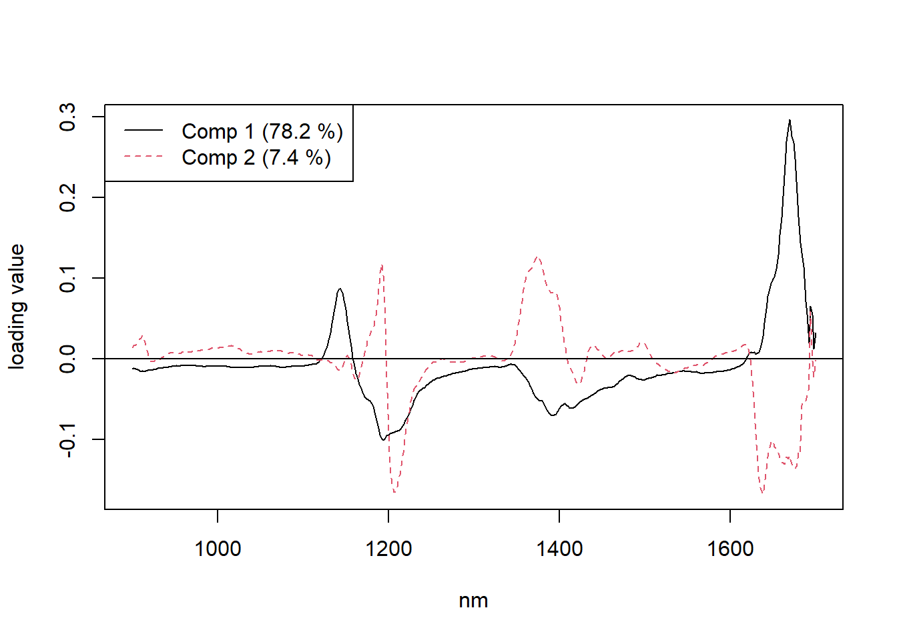

library(pls)
data(yarn)
data(oliveoil)
data(gasoline)
write.csv(yarn, "yarn.csv")
write.csv(oliveoil, "oliveoil.csv")
write.csv(gasoline, "gasoline.csv") ## lý do phải export và import vì dataset gasoline bị nén cột lại ở dạng AsIs
yarn <- read.csv("yarn.csv")
oliveoil <- read.csv("oliveoil.csv")
gasoline <- read.csv("gasoline.csv")
###
library(kableExtra)
yarn %>%
kbl() %>%
kable_styling(bootstrap_options = c("striped",
"hover",
"condensed",
"bordered",
"responsive")) %>%
kable_classic(full_width = FALSE, html_font = "arial") -> yarn_output
save_kable(yarn_output, file = "yarn_output.html")
oliveoil %>%
kbl() %>%
kable_styling(bootstrap_options = c("striped",
"hover",
"condensed",
"bordered",
"responsive")) %>%
kable_classic(full_width = FALSE, html_font = "arial") -> oliveoil_output
save_kable(oliveoil_output, file = "oliveoil_output.html")
gasoline %>%
kbl() %>%
kable_styling(bootstrap_options = c("striped",
"hover",
"condensed",
"bordered",
"responsive")) %>%
kable_classic(full_width = FALSE, html_font = "arial") -> gasoline_output
save_kable(gasoline_output, file = "gasoline_output.html")15 Example for Partial Least Squares and Principal Component Regression
15.0.1 Bước 1: Import dữ liệu
Sử dụng các bộ dữ liệu:
yarn A data set with 28 near-infrared spectra (NIR) of PET yarns, measured at 268 wavelengths, as predictors, and density as response (density). The data set also includes a logical variable train which can be used to split the data into a training data set of size 21 and test data set of size 7. View
oliveoil A data set with 5 quality measurements (chemical) and 6 panel sensory panel variables (sensory) made on 16 olive oil samples. View
gasoline A data set consisting of octane number (octane) and NIR spectra (NIR) of 60 gasoline samples. Each NIR spectrum consists of 401 diffuse reflectance measurements from 900 to 1700 nm. View
Thể hiện dữ liệu thô
15.0.2 Bước 2: Mô tả dữ liệu
gasoline là dataset có các dòng là các hợp chất octane ở nồng độ khác nhau, tổng cộng có 60 hợp chất như vậy, mỗi hợp chất được bước sóng từ 900 nm đến 1700 nm. Như vậy, ta muốn vẽ một đồ thị mô tả biến thiên độ hấp thụ theo từng hợp chất (từng dòng, như vậy sẽ có 60 dòng) với trục y là độ hấp thụ và trục x là bước sóng thì ta cần transpose dữ liệu về dạng sau. View
t(gasoline[, -c(1, 2)]) -> matrix_gasoline
gsub("\\.nm", "", row.names(matrix_gasoline)) -> ok_1
gsub("NIR.", "", ok_1) -> ok_2
as.numeric(ok_2) -> row.names(matrix_gasoline)
paste0("octane.", gasoline$octane) -> colnames(matrix_gasoline)matrix_gasoline %>%
kbl() %>%
kable_styling(bootstrap_options = c("striped",
"hover",
"condensed",
"bordered",
"responsive")) %>%
kable_classic(full_width = FALSE, html_font = "arial") -> matrix_gasoline_output
save_kable(matrix_gasoline_output, file = "matrix_gasoline_output.html")Vẽ đồ thị độ hấp thụ theo bước sóng và hợp chất octane
matplot(matrix_gasoline, type = "l", lty = 1,
ylab = "Độ hấp thụ", xlab = "Bước sóng (nm)", xaxt = "n",
col = 1:length(colnames(matrix_gasoline)))
ind <- seq(from = 900, to = 1700, by = 100)
ind <- ind[ind >= 900 & ind <= 1700]
ind <- (ind - 898) / 2
axis(1,
at = ind,
labels = row.names(matrix_gasoline)[ind])
legend(x = "topleft",
legend = colnames(matrix_gasoline),
cex = 1,
xpd = TRUE,
col = 1:length(colnames(matrix_gasoline)),
lty = 1, lwd = 1.5,
ncol = 4,
horiz = FALSE)15.0.3 Bước 3: Ráp code theo vignettes
We will do a PLSR on the gasoline data to illustrate the use of pls package.
options(digits = 4)
options(width = 200)
data(gasoline) ## vì các function bên dưới dùng cột NIR ở dạng AsIs nên ta gọi lại dataset này.
gasTrain <- gasoline[1:50, ]
gasTest <- gasoline[51:60, ]
# A typical way of fitting a PLSR model is
gas1 <- plsr(octane ~ NIR, ncomp = 10, data = gasTrain, validation = "LOO")
summary(gas1)Data: X dimension: 50 401
Y dimension: 50 1
Fit method: kernelpls
Number of components considered: 10
VALIDATION: RMSEP
Cross-validated using 50 leave-one-out segments.
(Intercept) 1 comps 2 comps 3 comps 4 comps 5 comps 6 comps 7 comps 8 comps 9 comps 10 comps
CV 1.545 1.357 0.2966 0.2524 0.2476 0.2398 0.2319 0.2386 0.2316 0.2449 0.2673
adjCV 1.545 1.356 0.2947 0.2521 0.2478 0.2388 0.2313 0.2377 0.2308 0.2438 0.2657
TRAINING: % variance explained
1 comps 2 comps 3 comps 4 comps 5 comps 6 comps 7 comps 8 comps 9 comps 10 comps
X 78.17 85.58 93.41 96.06 96.94 97.89 98.38 98.85 99.02 99.19
octane 29.39 96.85 97.89 98.26 98.86 98.96 99.09 99.16 99.28 99.39The validation results here are Root Mean Squared Error of Prediction (RMSEP).
There are two cross-validation estimates: CV is the ordinary CV estimate, and adjCV is a bias-corrected CV estimate.
It is often simpler to judge the RMSEPs by plotting them. This plots the estimated RMSEPs as functions of the number of components.
plot(RMSEP(gas1), legendpos = "topright")Once the number of components has been chosen, one can inspect different aspects of the fit by plotting predictions, scores, loadings, etc. The default plot is a prediction plot. This shows the cross-validated predictions with two components versus measured values.
plot(gas1, ncomp = 2, asp = 1, line = TRUE)plot(gas1, plottype = "scores", comps = 1:3)
explvar(gas1) Comp 1 Comp 2 Comp 3 Comp 4 Comp 5 Comp 6 Comp 7 Comp 8 Comp 9 Comp 10
78.1708 7.4122 7.8242 2.6578 0.8768 0.9466 0.4922 0.4723 0.1688 0.1694 plot(gas1, "loadings", comps = 1:2, legendpos = "topleft", labels = "numbers", xlab = "nm")
abline(h = 0)
A fitted model is often used to predict the response values of new observations.
predict(gas1, ncomp = 2, newdata = gasTest), , 2 comps
octane
51 87.94
52 87.25
53 88.16
54 84.97
55 85.15
56 84.51
57 87.56
58 86.85
59 89.19
60 87.09Because we know the true response values for these samples, we can calculate the test set RMSEP.
RMSEP(gas1, newdata = gasTest)(Intercept) 1 comps 2 comps 3 comps 4 comps 5 comps 6 comps 7 comps 8 comps 9 comps 10 comps
1.5369 1.1696 0.2445 0.2341 0.3287 0.2780 0.2703 0.3301 0.3571 0.4090 0.6116 For two components, we get 0.244, which is quite close to the cross-validated estimate above 0.2966.
15.0.3.1 Tài liệu tham khảo
https://cran.r-project.org/web/packages/pls/vignettes/pls-manual.pdf